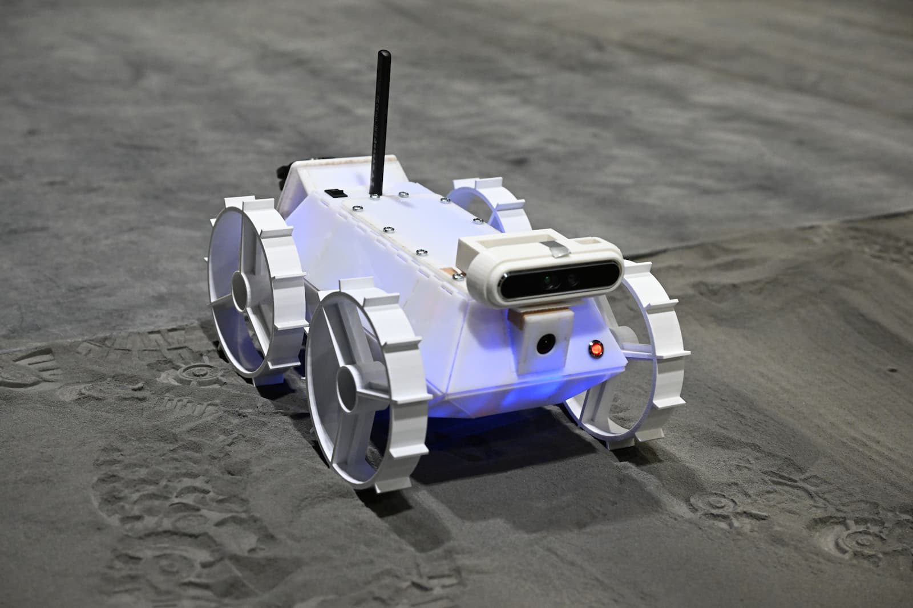
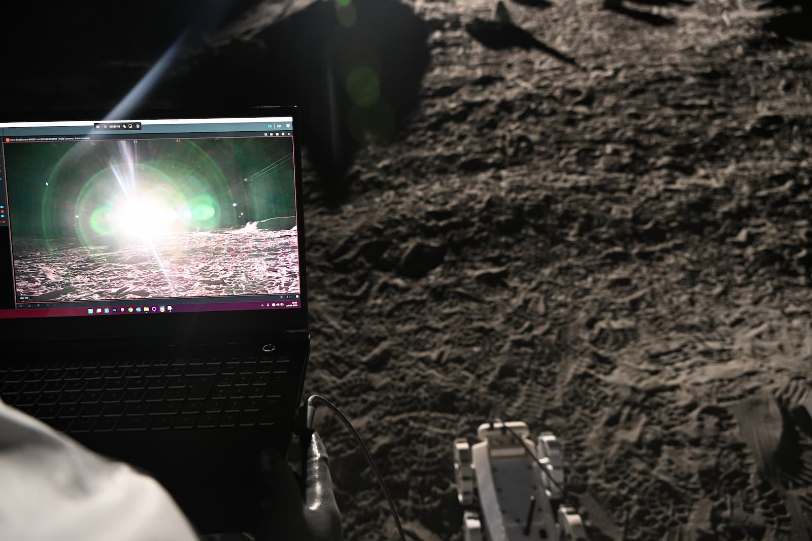
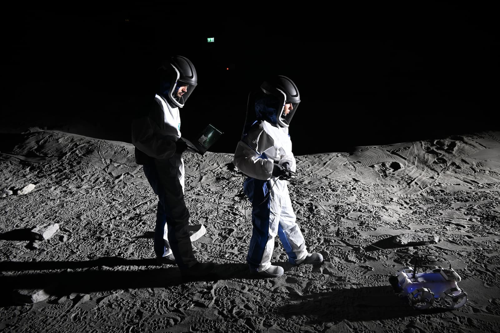

FIS2: advanced safe in-orbit docking architecture
Vision-based 6-DoF pose estimation and sensor fusion for autonomous rendezvous and docking, designed to stay accurate under the harsh illumination of space.
Post-graduate Research Assistant, School of Aerospace Engineering, Sapienza University of Rome
I design vision-based deep learning and sensor fusion for autonomous space systems. That means guiding spacecraft during in-orbit docking and finding rocks for lunar rovers when sunlight turns camera images into glare and deep shadow.
Vision-based 6-DoF pose estimation and sensor fusion for autonomous rendezvous and docking, designed to stay accurate under the harsh illumination of space.
A YOLO-based rock detector for the lunar rover Odin, trained with a curriculum that moves from generic data to indoor lighting and finally to realistic sunlight. A mid-fusion network adds depth to the RGB image, so detection stays reliable even where appearance alone fails.
Full paper, to appear
The full-length version of the work presented at iSAIRAS as "Domain-Aware Curriculum Learning for Lunar Rover Rock Detection Under Realistic Illumination Conditions", with a complete account of the hybrid dataset (real, synthetic and diffusion-stylized images), ablations on where to fuse depth, and a latency analysis.
To appear in IEEE ICAI-TEMS (International Conference on Application of Information Technologies in Engineering, Management and Science), Pisa, 2026. The link will be added here after publication.



MSc in Artificial Intelligence and Data Engineering, University of Pisa, 2026 (110/110).
BSc in Computer Engineering, University of Pisa, 2022.
My interests: computer vision, multimodal and RGB-D perception, sensor fusion, synthetic data and sim-to-real transfer, autonomous navigation in space.